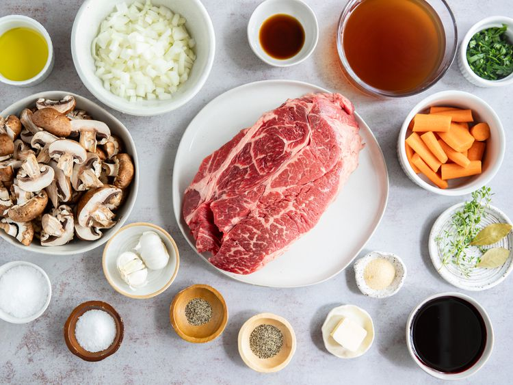
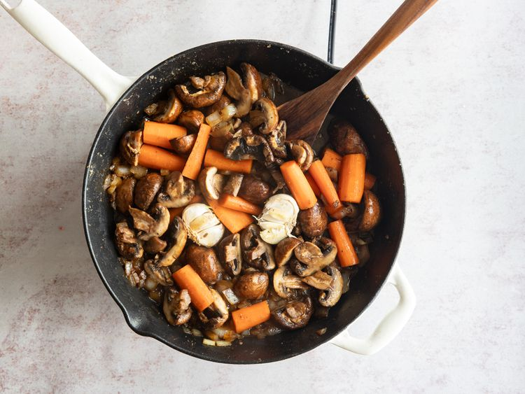
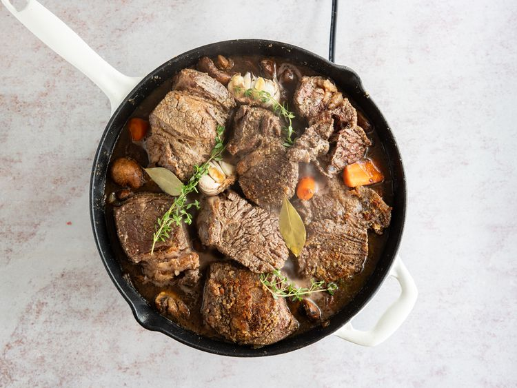

An elevated version of homestyle pot roast, this braised beef is hearty and full of earthy richness.
It would pair well with mashed potatoes, buttery noodles, or crusty bread.
Braising is a cooking method that involves slowly cooking meat in a covered pot with some sort of liquid.
In the case of this recipe, chuck roast is braised in a mixture of beef broth and red wine.
Braising is similar to stewing, but it requires less liquid.
Gather all ingredients and preheat the oven to 350 degrees F (175 degrees C).

Credit: ALLRECIPES/ KAREN HIBBARD
Season beef pieces evenly on all sides with 3 1/2 teaspoons salt, 2 teaspoons pepper, and garlic powder
Credit: ALLRECIPES/ KAREN HIBBARD
Heat oil in a large skillet over high heat.
Add beef, reduce heat to medium high and cook, undisturbed until it releases easily from the skillet and a golden brown crust has formed, about 4 minutes.
Flip pieces and continue to cook until browned on all sides.
Remove meat from the pan and set aside.

Credit: ALLRECIPES/ KAREN HIBBARD
Return skillet to medium-high heat and add 2 tablespoons butter to the drippings in the pan. When butter has melted add onion, mushrooms and carrots and cook 5 minutes, stirring often, scraping to release any browned bits from the bottom.
Add garlic and cook for 1 minute.

Credit: ALLRECIPES/ KAREN HIBBARD
Stir in wine and scrape to release any more bits from the pan.
Return the meat to the pan, along with any accumulated juices and add thyme, bay leaves and Worcestershire.
Credit: ALLRECIPES/ KAREN HIBBARD
Pour in beef broth just enough that it comes up 2/3 of the way up on the beef (do not fully submerge the meat in liquid).
Bring the mixture to a simmer.

Credit: ALLRECIPES/ KAREN HIBBARD
Cover and place in preheated oven until meat is very tender, 2 to 2 1/2 hours.
Credit: ALLRECIPES/ KAREN HIBBARD
Serve and enjoy.

Credit: ALLRECIPES/ KAREN HIBBARD